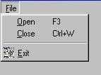
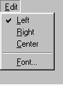
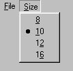
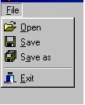

Menu má obyčajne dve úrovne
- pruh menu - obsahuje mená skupinových - rozbalitelných akcií
- rozbalené menu - obsahuje určitý počet položiek, pričom každej obyčajne odpovedá nejaká akcia. Okrem položiek môže obsahovať ešte grafické prvky - čiary.
- Položky
- podmenu - každá položka môže byť rozbalovacia
- príkazy - po ich volbe sa vykoná určitý podprogram
- nastavenie - pomocou prepínača sa aktivuje resp. deaktivuje nejaká vlastnosť. Znak, či je aktívna býva naľavo
- výber z N - volíme ktorá položka bude checked, nemôžu byť aktívne viaceré
- dialógová položka - zavolá dialógové okno. Býva zvykom za text pridať tri bodky
|  |
Vložíme objekt menu do formulára a dvakrát naň klikneme. Tým sa zavolá Menu Designer, v ktorom môžme vytvoriť
celú štruktúru menu môžme vytvoriť. Oddeľovací riadok možno do menu vložiť, ak Caption zvolíme rovno '-' (minus),
takejto položke nemá zmysel vytvárať ošetrenie udalosti OnClick a ani ďalšie vlastnosti.
Ak názov položky neobsahuje znaky na vytvorenie korektného mena (položka Name), tak "zlé" znaky sú vynechané a ak je treba je pridaný na začiatok znak N. |
- Vloženie podmenu
- ak chceme môžme menu ľubovoľne presúvať v objektInspectorovi a tiež Menu Designer.
- Kliknutím pravým ma aktívnu položku sa ukažu možnosti a zvolíme Create Submenu, potom môžme vytvárať menu patriacej ku tejto položke. Ku rozbalovacím položkám nie je rozumné ošetrovať udalosť OnClick. - Vloženie príkazu
- 2-krát klikneme na položku menu a do zobrazeného podprogramu vložíme požadované príkazy,
alebo ošetríme udalosť OnClick.
Každá položka má udalosť OnClick. - Vloženie zaškrtávacích políčok - prepínač
 Podľa stavu vlastnosti Checked je možné pred položkou zapnúť alebo vypnúť značku "zafajknuté". Pri ošetrení udalosti OnClick vo svojej réžii prepíname vlastnosti Checked, čím prepíname značku výberu. (voľbou menu sa vlastnosť Checked automaticky nezmení, to musí urobiť program) - Vloženie volby 1 z N - radiobutton
 Niekoľkým za sebou idúcim položkám menu nastavím: - vlastnosť RadioItem nastavím na True
- vlastnosť RadioGroup mastavím, ma rovnaké číslo - jedinečné
- Vkladanie obrázkov ku položkám menu
 Ku tlačítkam BitBtn sme vyberali obrázky z adresára \Program Files\Common Files\Borland Files\Images\Buttons\, tieto obrázky sú vlastne spojené dva 16x16 spojené dokopy na rozmer 16x32 a priamo do menu sa nehodia - potrebujeme rozmer 16x16 a navyše potrebujeme systémové obrázky, ktoré tam nie sú. Postup:
- vložíme object MainMenu do formulára
- cez File-Open načítame súbor \Program Files\Borland\Delphi\Source\Vcr\ActnRes.pas
- z vytvoreného okna klikneme prvým na ImageList a zvolíme Edit-Copy
- pravým klikneme na formulár a zvolíme Edit-Paste
- na formulári má pribudnúť objekt Imagelist
- zavrieme vytvorené okno
- nastavíme v objekte MainMenu vlastnosť Images na ImageList1
- teraz môžme už každej položke priradiť obrázok z ImageListu cez vlastnosť ImageIndex
- do Imagelistu môžme obrázky pridávať
- 2-krát klikneme na Imagelist1
- zvolíme si akciu Add
- zvolíme si obrázok napr. z obrázkov pre BitBtn
- na otázku, či chceme obrázok roztrhnúť na dva zvolíme Yes
- pribudnú nám dva obrázky do ImageList
- ten druhý (šedý) obyčajne odstránime
- Vkladanie horúcich kľúčov
- Fungujú aj ak menu nie je zobrazené.
Každej položke môžme nastaviť vlastnosť ShortKey, kde si môžme vybrať z veľkého počtu kľúčov.
Často sa to kombinuje s neviditelným menu (položka vlastne neexistuje) - vlastnosť Visible - čím možno určiť horúci kľúč ku nejakému podprogramu. Ak užívateľ stlačí ShortKey je zavolaná procedúra OnClick patriaca tej položke. - Vkladanie horúcich znakov
- Fungujú ak je menu zobrazené. V každej položke možno určiť jeden znak ako horúci (bude podčiarknutý), urobíme to tak, že pred požadovaný znak vložíme znak &.
|
| 1. Vytvor program s menu rovnakým ako má delphi ale len dvoma položkami v pruhu File a Help
2. Vytvor program podobný programu Notepad s menu File - Open,Save, Save as | Exit Font - Name - Times New, Arial, Script, Courier - Size - 8,10,12,16,24 každá položka bude mať svoj typický obrázok a samozrejme aj typickú akciu. |